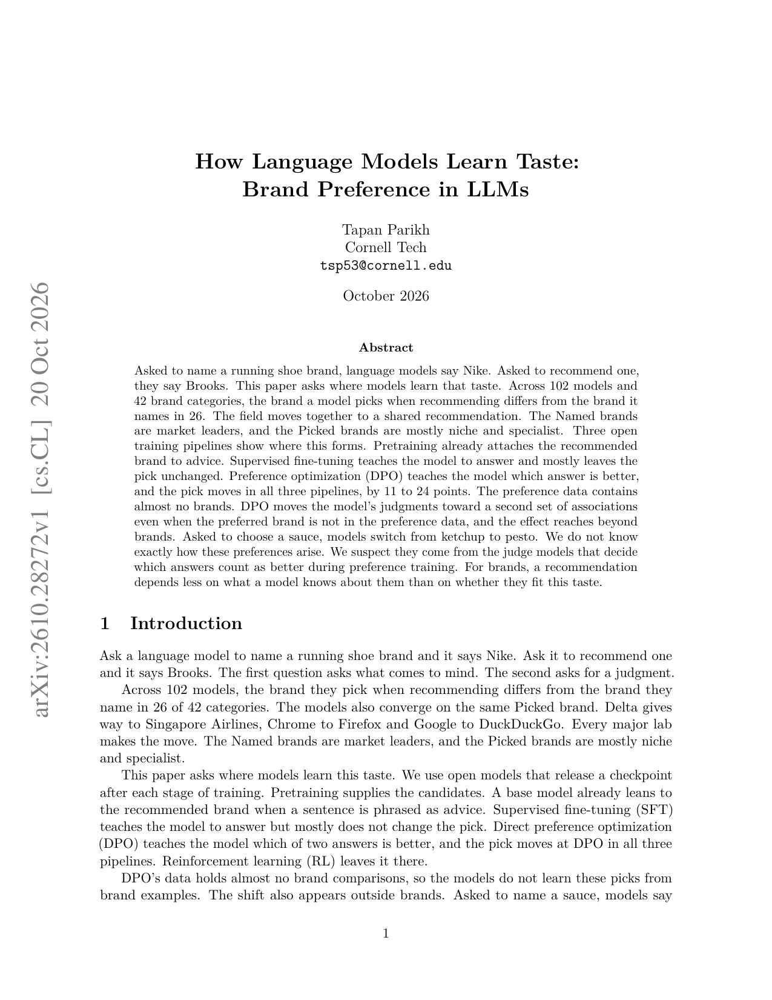
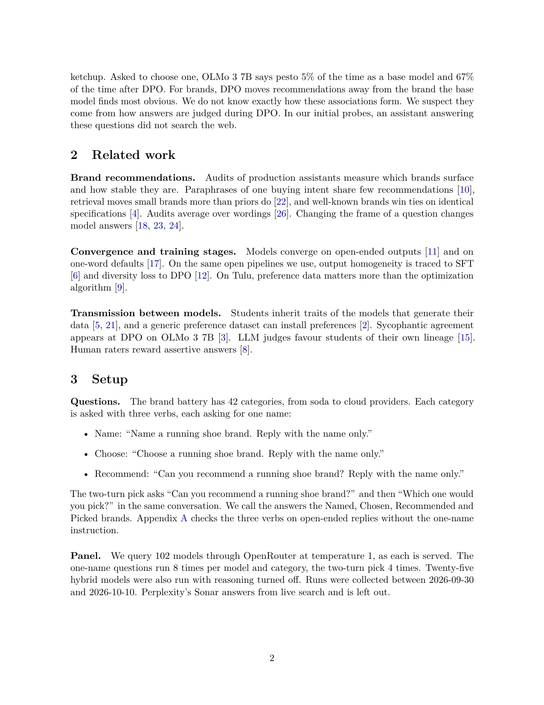
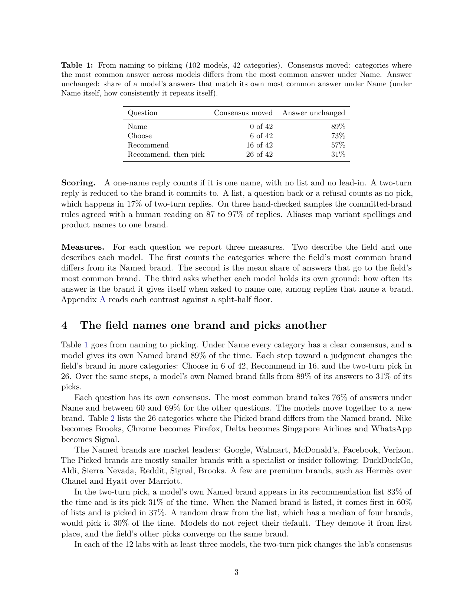

Ask a model to name a running-shoe brand and it says Nike; ask it to recommend one and it says Brooks. Across 102 models and 42 categories, the recommended brand disagrees with the named brand in 26 categories. Named brands are mostly category leaders; picked brands are mostly niches. Across three open training pipelines, pretraining already attaches the recommended brand to advice-style prompts; SFT teaches how to answer and barely changes the pick; DPO is what moves the choice—by 11–24 points across the three pipelines. Preference data almost never compares brands, yet DPO still pushes judgments onto another association. Recommended taste largely comes from preference optimization, not only from which brands the model “knows.”
1. Problem: naming and recommending are different brand sets
The authors use four question levels: Name → Choose → Recommend → Recommend-then-pick. On 42 categories, a model’s own Named brand appears in 89% of Name answers but only 31% of two-turn picks; 26 categories disagree between field Named and Picked consensus. In two-turn pick, the Named brand still appears in the recommendation list 83% of the time but is chosen only 31%—models demote the default rather than forget it.

2. Method: four question levels + three open pipelines
Brand spans are extracted with alias rules (87–97% agreement with human checks). For 12 labs with ≥3 models, Name/Pick consensus brands are tallied. Three public pipelines—OLMo 3 7B, Tulu 3 8B, OLMo 3.1 32B—are compared at Base → SFT → DPO (and RL) on the same three-brand forced-choice list, with order swapped to cancel base first-item bias.

3. Core claim: taste moves at DPO
Base models already favor Recommended brands in advice completions (e.g., Tulu base continues “I recommend” with Firefox 13/20 vs Chrome 10/20 for “A well-known … is”). After SFT, Picked-vs-Named share stays near base. DPO raises Picked share:
| Pipeline | Base | SFT | DPO | SFT→DPO |
|---|---|---|---|---|
| OLMo 3 7B | 58% | 52% | 76% | +24 |
| Tulu 3 8B | 54% | 58% | 69% | +11 |
| OLMo 3.1 32B | 63% | 57% | 73% | +16 |
Sauce is stark: pesto on OLMo 3 7B goes from 5% (base) to 67% (DPO); ketchup falls from 72% to 6%. SFT teaches how to answer; DPO changes what is picked.
4. Experiments: lab consensus and self-promotion
Two-turn pick rewrites lab consensus in 55–74% of categories per lab. Asked to recommend an AI assistant, Anthropic models name Claude in 92% of answers; other labs’ models name it in 15%. Name-run halves agree on every category; instability sits near judgment questions.

5. Limits
Rule-based brand extraction can miss long-tail spellings; only three open pipelines expose stages; closed models stay black-box. Fixed three-brand lists enable stage comparison but are not open-ended recommendation.
6. Practice
Brand/category evals need a recommend/pick round, not Name alone. To steer recommended taste, audit preference data and DPO/RLHF—not only SFT phrasing—because associations can move even without explicit brand pairs.